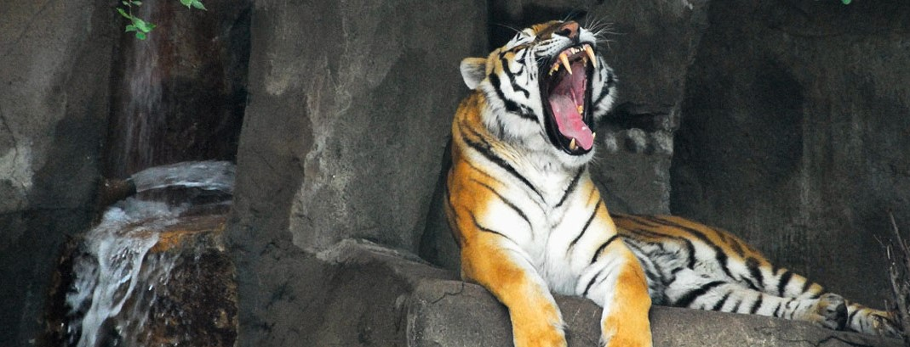

Zoo Gift Shop

Go wild on our sustainable gifts and take home a souvenir as rememberance of your exciting vist.
have a wide varity of key chains, T-shirts, mugs and plenty of toys to choose from.
Some of our popular items being;
- Animal plushie
- Scented candle
- Hand carved wooden figuring
- Tribal Chain
Dolphin Show

A one-of-a-kind show that will captivate both children and adults.We'll be observe how these creatures synchronize their
movements and their abilities to leap, balance, and frolic in the exhibition.
You will also be able to witness their
ability to learn and adopt to their keepers directions, you may also their communication abilities as well as how they
interact with other dolphins. The dolphin show is one that you can always enjoy because it happens numerous times a day, all week long.
Tigers

Did you know that tigers are on the brink of extinction? the largest population of tigers is in India which is home to
half the wildcats. We ensure that our tigers are safe and to their best health state they can be at.
Tigers are very important to the ecosystem as they are one of the top predators in the food chain. Tigers help keep our
habitats balanced by preying on other animals, mainly herbivores. However, too many herbivores could lead to overgrazing
and degradation of the ecosystem.